0x00 前言
如今，AI 应用领域发展迅速，大模型（LLM，Large Language Models）已经成为推动技术进步的重要力量。
说到大模型，OpenAI 的 GPT 系列无疑是其中的佼佼者。它通过海量数据训练，能够完成高质量的语言处理任务，比如聊天问答、文本生成、翻译等。
去年，ChatGPT 推出了一个支持定制个人知识库的功能，采用了检索增强（RAG，Retrieval-Augmented Generation）技术。简单来说，就是模型在生成回答之前，会先从知识库中查找相关信息，这样一来，输出的内容不仅更准确，信息量也更大。
不过，由于网络环境、隐私和政策等因素，线上知识库的使用受到不少限制。因此，越来越多的人开始尝试在本地部署自己的大模型和知识库。
但问题来了，目前市面上的大模型五花八门，缺乏统一的管理标准。虽然有很多开源免费的选择，但部署到本地的门槛并不低。直到 Ollama 的出现，情况才有所改观。
Ollama 是一个大模型的管理框架，它的作用有点像 Docker：你可以把每个标准化的大模型看作一个“镜像”，而 Ollama 则可以通过一行命令快速拉取并运行这些大模型。
不过，Ollama 本身是基于命令行的工具，为了方便我们对大模型进行微调和使用，还需要借助 AnythingLLM。
AnythingLLM 提供了一个 ChatBot 界面，它能够将我们输入的结构化知识转换成大模型可以理解的语言（也就是嵌入向量），从而实现高效的交互。
在本文中，将会引导大家何利用 Ollama 快速搭建本地的大模型服务，并结合 AnythingLLM 构建一个私人定制知识库。
0x10 部署 Ollama
0x11 安装
到 Ollama 官网 https://ollama.com/ 下载安装包即可：
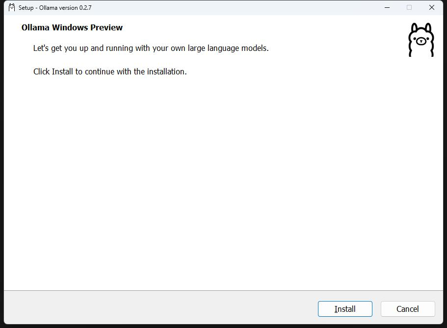
它强制安装在 C:\Users\<username>\AppData\Local\Programs\Ollama，安装完成后可在终端输入命令验证：
ollama -v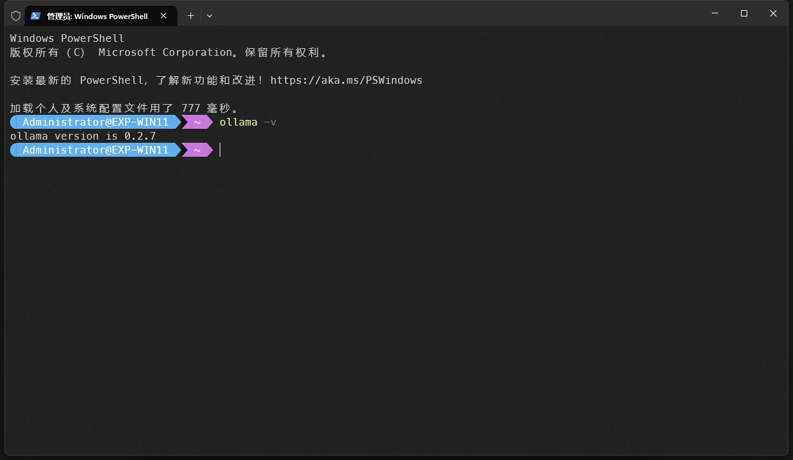
Ollama 安装后是默认开机启动的，如果不希望自启，可以到目录下：
%AppData%\Microsoft\Windows\Start Menu\Programs
找到 Ollama 并将其删除。
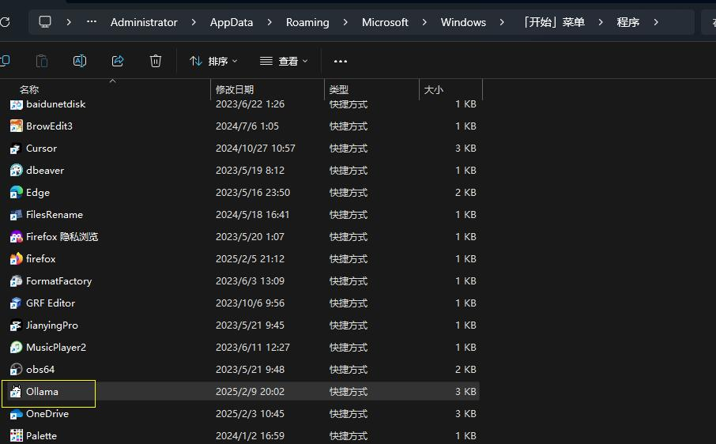
0x12 修改大模型存储位置
默认情况下，Ollama 下载的大模型存储在 C:\Users\<username>\.ollama\models，如果不想 C 盘越来越大，建议先修改 Ollama 的大模型存储目录：
- 新增系统环境变量
OLLAMA_MODELS - 路径设置为非 C 盘的空目录即可（建议全英文）
- 重启电脑（必须，否则 Ollama 不会读取这个新变量）
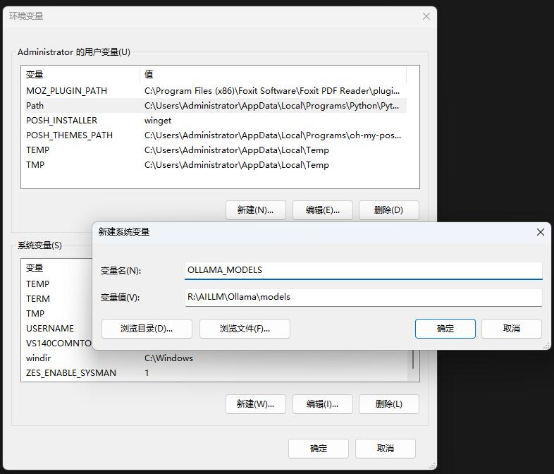
0x13 下载大模型
Ollama 的大模型管理有点类似 docker 镜像，可以到官方的在线模型库找到适合自己的大模型：
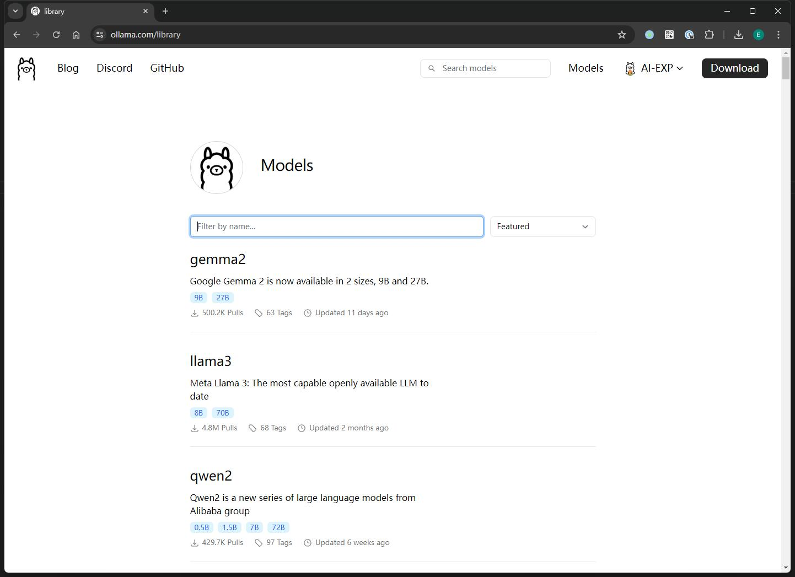
这里有几个推荐的大模型：
deepseek-r1: 国产之光，截至 2025 为止最好的开源大模型，效果和 GPT4 相当，中文场景甚至已经超越 ChatGPT4llama3: Ollama 官方的大模型llama2-chinese: 官方针对中文特化训练的大模型qwen2: 阿里的 通义千问 大模型
找不到 openai 或者 chatgpt 的大模型是正常的，人家是商业闭源大模型
在终端执行命令下载大模型：
ollama pull [MODEL_NAME]查看已下载的大模型列表：
ollama list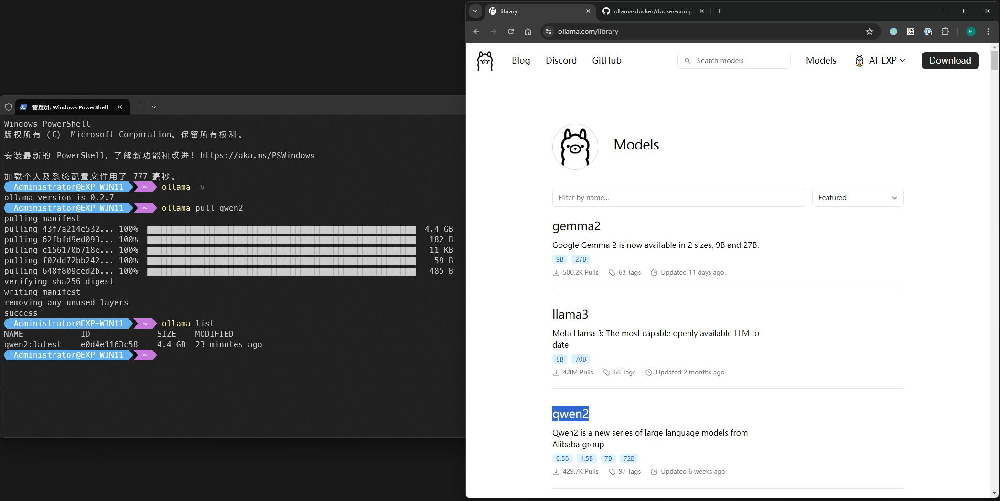
顺带一提，删除大模型的命令为：
ollama rm ${NAME}必须使用 NAME，如果用 ID 删除不了
0x14 运行大模型
有两种运行模式，其中聊天模式命令为：
ollama run [MODEL_NAME]此模式不但启动了大模型的后台服务，还可以在终端直接和大模型对话。
这里运行阿里的 通义千问 大模型： ollama run qwen2。
首次执行大概要几十秒启动，看到 >>> 就可以开始聊天了：
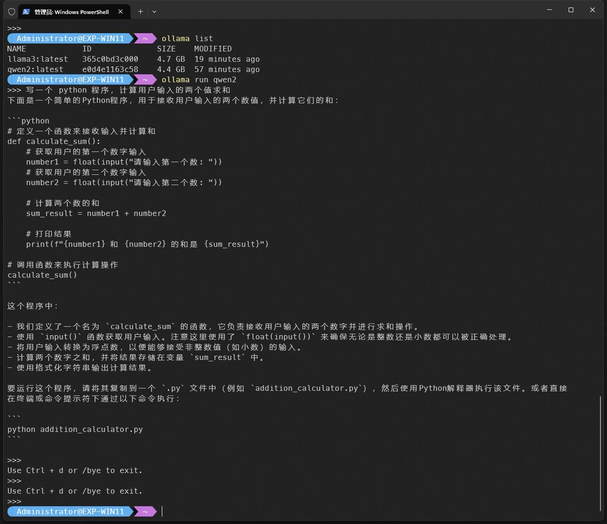
在终端输入 Ctrl + d 或 /bye 退出对话交互。
只是退出对话交互，后台大模型服务还在。
另一种模式是服务模式，命令为：
ollama serve此模式仅提供服务给 LLM 知识库，所以终端只会看到 web 日志，无法直接和大模型对话：
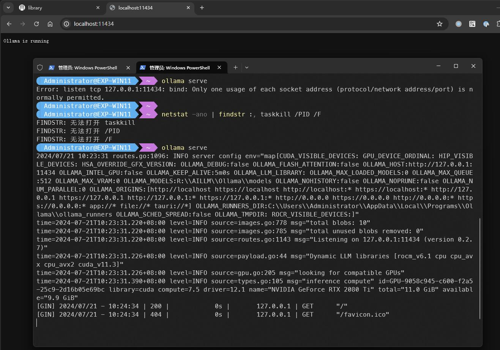
在终端输入 Ctrl + c 终止命令。
大模型服务因为在前台运行，也会一起终止。
关于端口占用报错的解决方法
当在 Windows 中通过 ollama run 命令运行 Ollama 时，有三个进程会被激活：
- 托盘服务：
Ollama - 用户进程：
ollama.exe - 后台大模型服务：
ollama_llama_server.exe
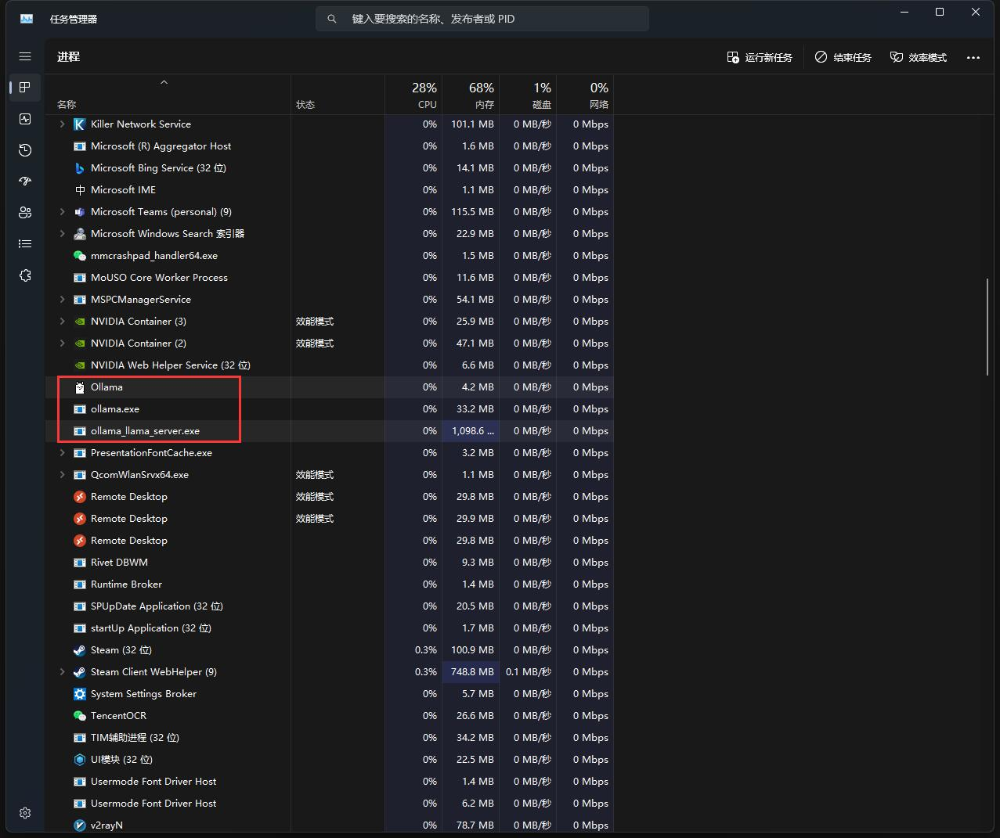
仅仅在终端退出对话，因为 ollama_llama_server.exe 服务还在后台运行，若直接运行 ollama serve 就会报错：
Error: listen tcp 127.0.0.1:11434: bind: Only one usage of each socket address (protocol/network address/port) is normally permitted.解决方法是右击右下角的托盘完全终止大模型的后台服务：
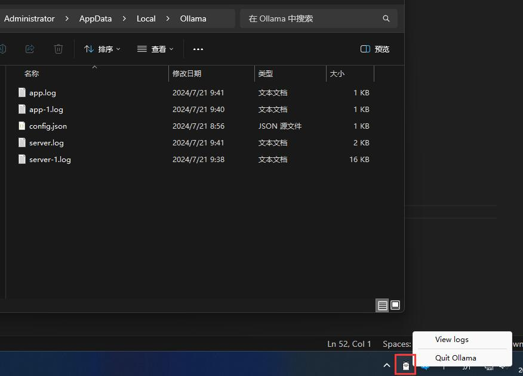
至此，大模型服务已经准备好了。
接着为了定制大模型成为我们的知识库，需要安装 AnythingLLM。
0x20 部署 AnythingLLM
0x21 安装
到 AnythingLLM 官网 https://useanything.com/ 下载安装即可。
0x22 选择大模型
首次启动时，提示选择一个大模型。
AnythingLLM 支持接入的大模型品类非常多，例如在线的商业大模型 OpenAI，只需要生成并填入 APIKey 、再选择 ChatGPT 模型就可以了：
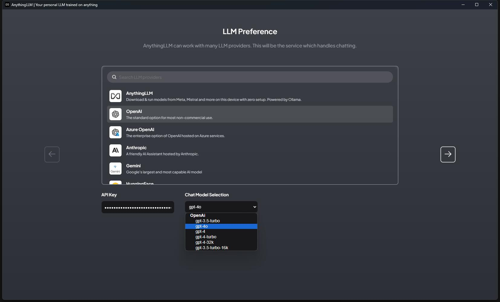
但是国内如果没有科学上网加持，一般是无法使用的，所以这里需要重新选择为前面本地搭建的 Ollama 服务：
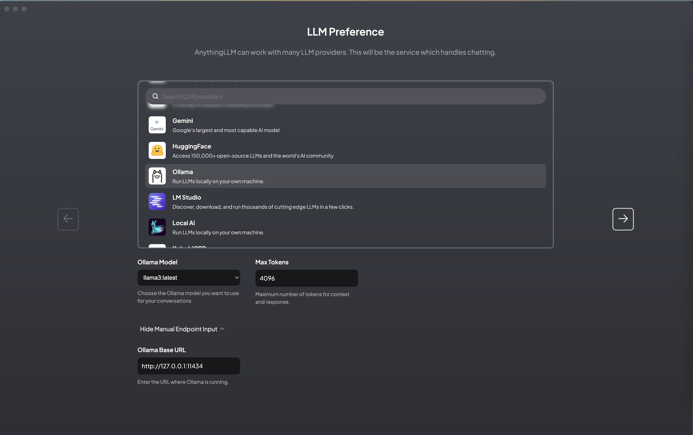
之后亦可在左下角 设置 -> LLM 首选项中更换大模型：
- 在
LLM 提供商选择前面搭建在本地的 Ollama 服务 - 在
Ollama Model选择前面下载的qwen2:latest大模型
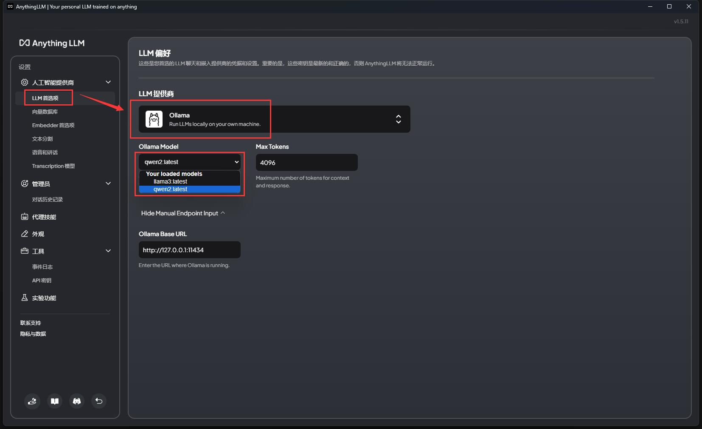
0x23 选择嵌入式模型
当我们把知识库资料上传到 AnythingLLM 后，AnythingLLM 会对每一份资料中提取关键数据、并转译成神经网络可以理解的特征向量。
而所谓的嵌入式模型，它在其中起到转译器的作用：将资料中的文本、图像或其他数据转换为密集的数值向量。
每一个向量代表一组数据特征，它们对知识库的检索能力至关重要。
更换嵌入式模型的入口在左下角 设置 -> Embedder 首选项，这里保持默认值 AnythingLLM Embedder 即可：
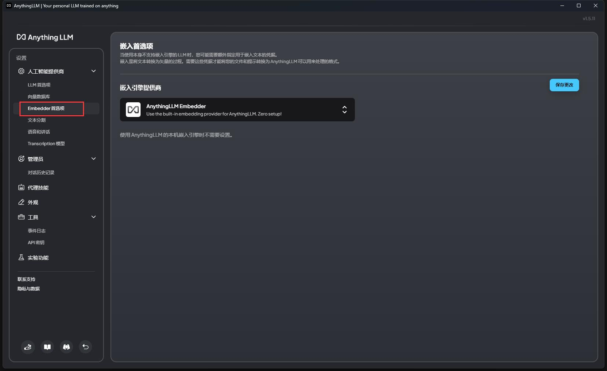
关于嵌入式向量
嵌入式向量（Embeddings），它是一种将复杂的事物（如单词、图像、用户、产品等）转化为可以被计算机理解的形式的方法。
想象一下，如果你要向一个外星人解释 “猫” 是什么，你可能会说它是一种小型的、有毛的、有四条腿的动物，喜欢喵喵叫。但对于计算机来说，它并不能像人类那样理解这些词语。我们需要一种方法，能把 “猫” 转化为计算机可以理解的形式。这就是嵌入式向量的作用。
嵌入式向量其实就是一个数学上的向量，包含了很多数字。每个数字都代表了一种特性。比如，在描述 “猫” 的嵌入式向量中，可能有一个数字代表它的大小，另一个数字代表它的毛色，还有一个数字代表它的叫声等等。这些数字是通过机器学习模型从大量的数据中学习得到的。
嵌入式向量的一个重要特性是，相似的事物会有相似的嵌入式向量。比如，“猫” 和 “狗” 在很多方面都很相似（都是小型的、有毛的、有四条腿的动物），所以他们的嵌入式向量也会很接近。这使得我们可以用嵌入式向量来寻找相似的事物，或者理解事物之间的关系。
总的来说，嵌入式向量是一种将复杂的事物转化为计算机可以理解的形式的方法。通过嵌入式向量，我们可以更好地理解和处理各种复杂的问题，如自然语言处理、推荐系统、图像识别等。
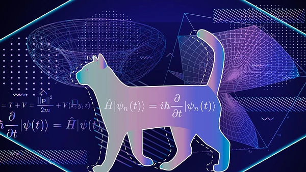
嵌入式模型的应用很普遍：
- 在《AI 全自动考勤原理与实现》中，把每一个人脸特征 Embedding 为一个 n 维向量就使用了这个技术
- 在《SD 零基础入门系列》中，Embedding 主要用于优化画风，甚至后来发展到 LoRA 模型之后，被广泛用于绘制某一固定特定人物角色特征
0x24 选择向量数据库
通过嵌入式模型转译资料得到的特征向量，会统一存储到向量数据库中，以便之后检索知识之用。
更换向量数据库的入口在左下角 设置 -> 向量数据库，这里保持默认值 LanceDB，确保全部向量存储在本地：
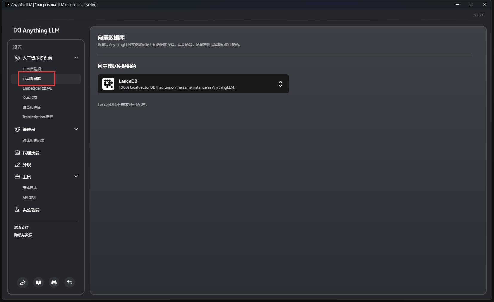
0x25 界面汉化
最后为了便于使用，可以在左下角 设置 -> 外观 中修改界面语言为中文：
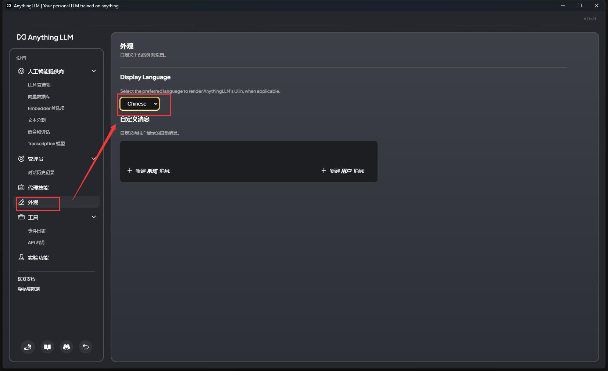
至此 AnythingLLM 的安装和基本配置已经完成，接下来可以定制知识库了。
0x30 知识库定制
0x31 新建知识库
在 AnythingLLM 的聊天界面中，点击左上角的 新建工作区 即可（一个工作区可以认为是一个独立的知识库）：
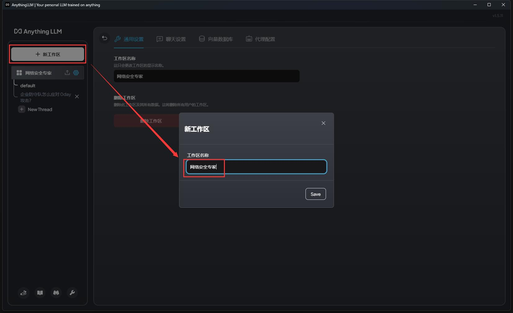
其实此时已经可以和大模型对话了，我们前面选择的是 qwen2 大模型，所以它现在只有阿里通义千问的基本能力：
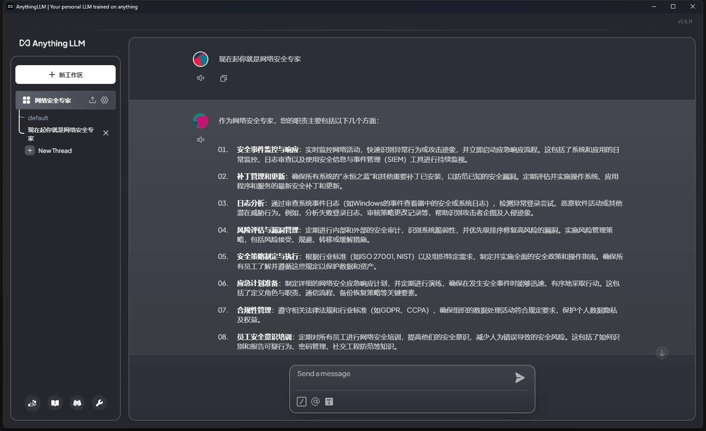
我们接下来要赋予它专业的知识能力。
0x32 上传知识
点击工作区名字旁边的上传按钮：
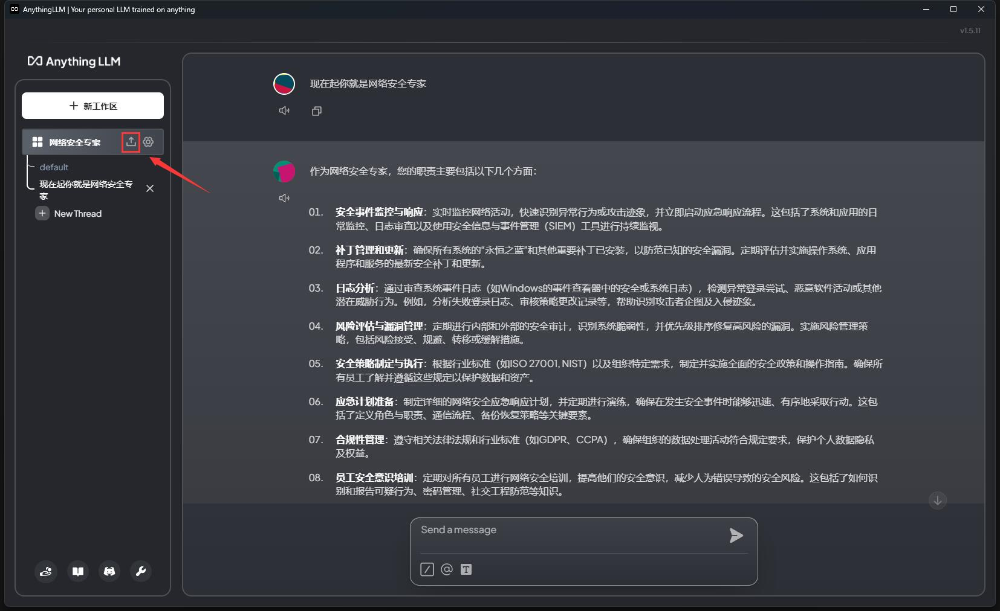
有两种上传知识材料的方法：
- 上传本地材料： 点击
Click to upload or drag and drop - 爬取网络材料： 输入 URL 并点击
Fetch website
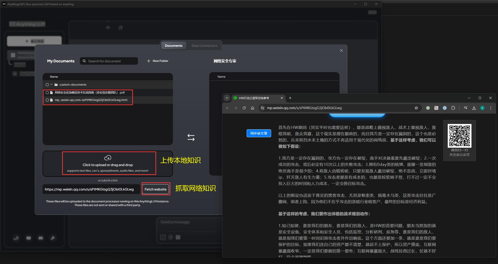
但无论以什么方式上传，知识材料都会被转译为特征向量缓存在左侧区域，此时需要添加到右侧知识库中：
- 选中要添加到知识库的材料
- 点击
Move to Workspace - 点击
Save and Embed - 等待知识被添加到向量数据库
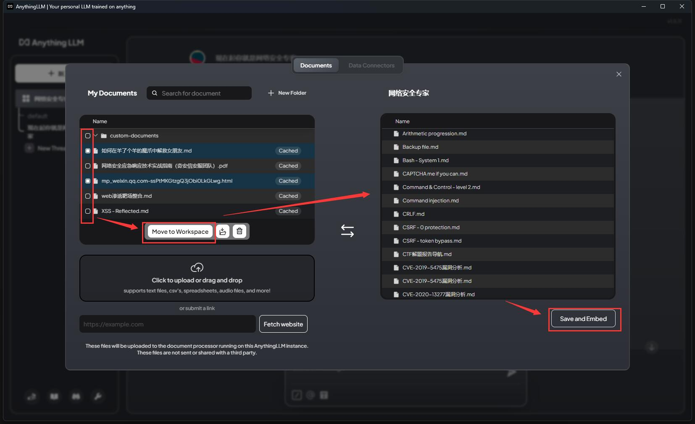
回到聊天界面和 AI 重新对话，在对话结束后点击 Show Citation 即可查看这次回答引用了多少知识：
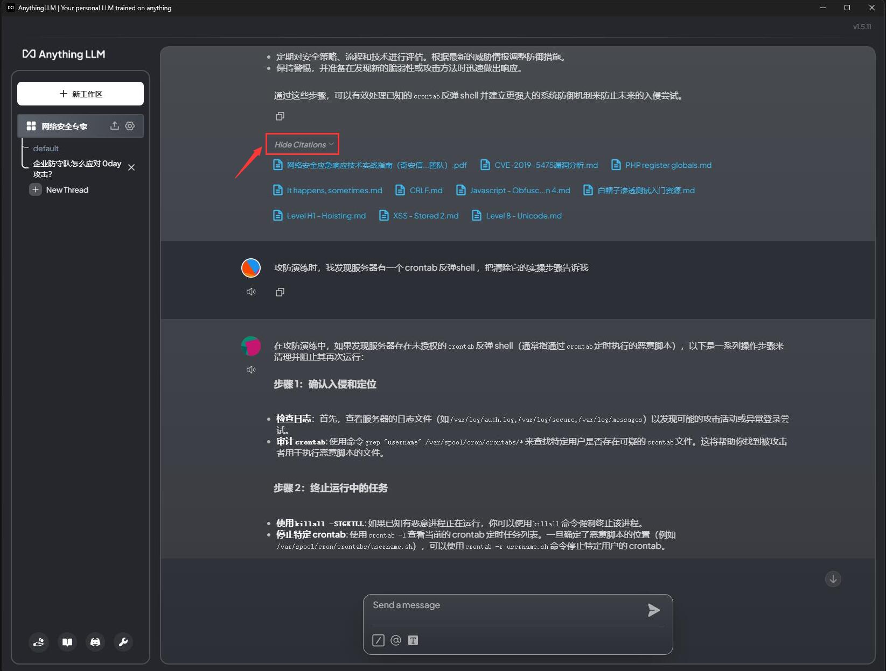
0x33 查询模式
有时候我们不希望大模型过于发散地回答问题（尤其某些大模型经常不懂装懂地回答一些似是而非的问题），这时可以设置成【查询】模式，只有当上传的材料里面存在相关知识时才作答，提高精准度。
点击工作区名字旁边的设置按钮 -> 聊天设置 -> 聊天设置 -> 查询，最后点击 Update Workspace 保存设置即可：
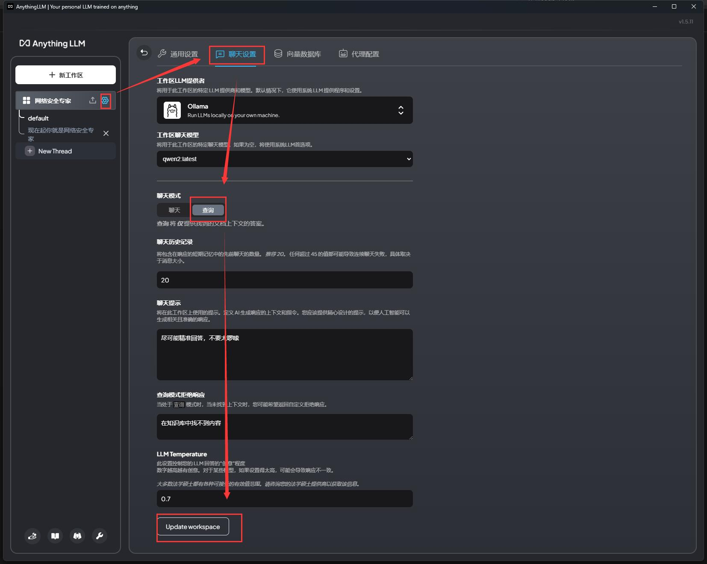
另外还能下调 LLM Temperature 的值，使得回答内容更忠实于上传的材料、而非无中生有：
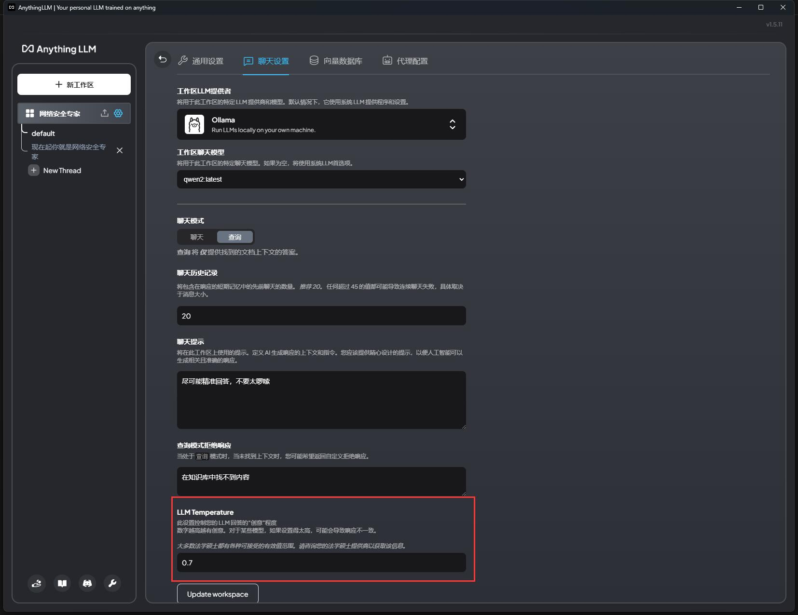
0x34 关于回答质量
当我们发现回答质量不高时，可能有几种原因：
- 上传的材料质量太低，尤其是网页抓取的内容，因为站点有可能设置了反爬，根本拉不到、或者拉了很多 html 内容，导致知识库被污染
- 向量数据库参数设置不当，可以尝试微调上下文相关片段和相似性阈值：
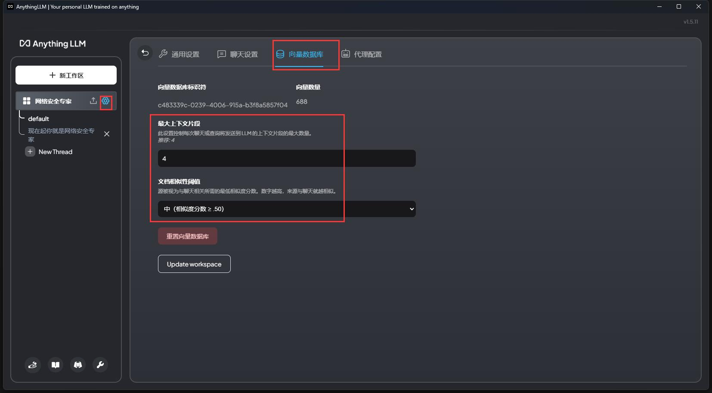
- 提问的姿势不对：
如前文所述，知识库采用了检索增强生成（RAG）技术，该技术在生成式大模型的基础上增强了检索相关信息片段的能力。
简单来说，知识库其实没有通读并充分理解我们所上传的内容，它更像是一个信息检索工具。
RAG 的原理其实很简单：它把用户上传的文件先切割成一个个小块（chunk）、为这些小块生成特征向量，然后都保存到向量数据库中。
当我们问一个问题时，它会根据语义的相关性、找出最接近的“信息块”，然后由大模型基于这些信息构建回答。问题越具体、找到的信息块就越准确。
但 RAG 最大的缺陷是它没有信息块之间关联关系，以致当我们提出一个抽象或宏观的问题时，它没有办法整合各个信息块推导出答案。
最近微软发布的 GraphRAG 就是解决了传统 RAG 固有缺陷，它在信息块之间建立了知识图谱，实现信息的分层聚合，从而在一定程度上解决抽象问题的应答能力。
0xF0 参考文档
0xF1 名词解释
- 大模型： 指的是参数数量庞大的模型，通常是指在自然语言处理（NLP）或其他 AI 领域中的深度学习模型，如 GPT 系列、BERT 等。
- 嵌入式模型： 指的是将文本、图像或其他数据转换为密集的数值向量的模型。这些向量捕捉输入数据的重要特征，并用于各种机器学习任务。
- 向量库： 是一个存储大量向量的数据库，这些向量通常由嵌入式模型生成。在检索任务中，向量库可以用来快速查找与查询最相关的项。
- 知识库： 是结构化或半结构化的信息存储，包含事实、关系等数据。在 NLP 中，知识库用于增强模型的语义理解能力。
- LLM： 即大型语言模型（Large Language Models），这类模型使用大量文本数据进行训练，能够执行多种语言任务，如文本生成、翻译、问答等。
- RAG： 即 Retrieval-Augmented Generation，是一种模型，结合了检索和生成的方法。它通常使用 LLM 进行生成，同时使用向量库或知识库进行信息检索，以辅助生成过程，提高回答的准确性和相关性。
0xF2 关系
- 大模型和 LLM 是同一概念的不同称呼，特指大规模的语言模型
- 嵌入式模型用于生成存储在向量库中的向量
- 知识库可以是构成RAG模型中检索组件的一部分，提供背景知识以辅助 LLM 进行更准确的生成
- RAG 模型是一个桥梁，利用 LLM 进行生成，同时结合向量库或知识库来增强其输出的信息量和质量